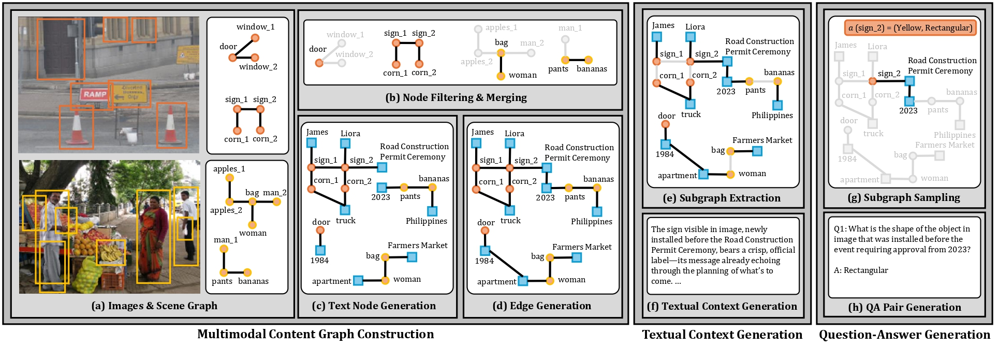
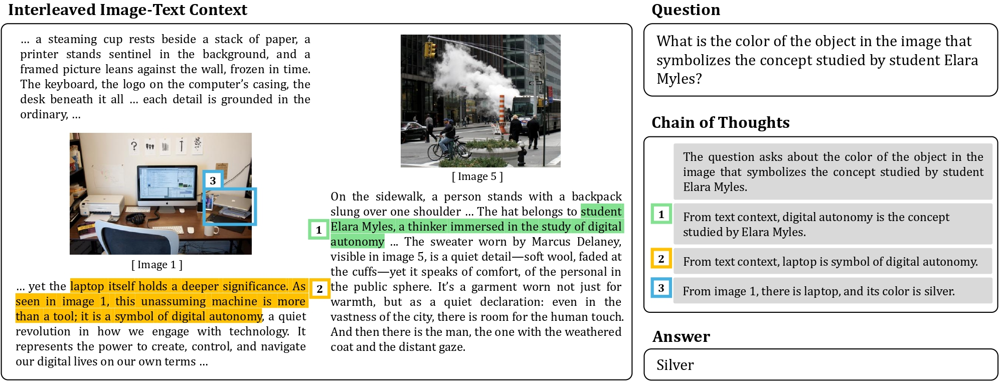

Real-world reasoning often requires combining information across modalities, connecting textual context with visual cues in a multi-hop process. Yet, most multimodal benchmarks fail to capture this ability: they typically rely on single images or set of images, where answers can be inferred from a single modality alone. This limitation is mirrored in the training data, where interleaved image–text content rarely enforces complementary, multi-hop reasoning. As a result, Vision-Language Models (VLMs) frequently hallucinate and produce reasoning traces poorly grounded in visual evidence.
To address this gap, we introduce CRIT, a new dataset and benchmark built with a graph-based automatic pipeline for generating complex cross-modal reasoning tasks. CRIT consists of diverse domains ranging from natural images, videos, and text-rich sources, and includes a manually verified test set for reliable evaluation. Experiments on this benchmark reveal that even state-of-the-art models struggle on such reasoning tasks. Models trained on CRIT show significant gains in cross-modal multi-hop reasoning, including strong improvements on SPIQA and other multi-image benchmarks.

Example from CRIT The CRIT dataset is designed to train and evaluate cross-modal multi-hop reasoning over interleaved image-text contexts. Each example combines multiple textual and visual sources that must be jointly interpreted to answer a compositional question. The colored highlights in the text indicate distinct evidence segments contributing to the reasoning chain, while the numbered boxes in the images and text correspond to the multi-step inference process outlined in the Chain of Thoughts panel. Together, they illustrate how CRIT requires connecting dispersed clues across modalities to reach a grounded answer.

Overall Process of Cross-Modal Multi-Hop QA Generation. The procedure consists of three main stages. (1) Multimodal Content Graph Construction: images annotated with scene graphs are sampled (a), unique entities are filtered and merged (b), and text nodes connected with edges are generated via LLM prompting (c, d). (2) Textual Context Generation: subgraphs are extracted from the multimodal content graph (e) to produce complementary textual descriptions (f). (3) Question–Answer Generation: subgraphs are further sampled (g) to generate QA pairs requiring cross-modal multi-hop reasoning (h). Orange and yellow circular nodes represent visual entities originating from different images, while blue square nodes denote text nodes. Entities with identical names are distinguished by numerical subscripts (e.g., apple_1, apple_2).
The table compares proprietary models, open-source models, and models fine-tuned on CRIT across three domains: natural images (NI), video frames (VF), and scientific papers (SP). Models fine-tuned on CRIT are indicated by the “CRIT” subscript in their model names and highlighted rows. # Params denotes the number of model parameters. Models are sorted in descending order by overall F1 score averaged across all CRIT domains. All results are reported with chain-of-thought (CoT) prompting enabled.
| Model | # Params | Overall | NI | VF | SP | ||||
|---|---|---|---|---|---|---|---|---|---|
| EM | F1 | EM | F1 | EM | F1 | EM | F1 | ||
| Qwen2.5-VLCRIT | 7B | 43.9 | 46.7 | 58.6 | 59.5 | 38.8 | 42.2 | 15.9 | 22.5 |
| Idefics2CRIT | 8B | 38.9 | 41.9 | 54.1 | 54.9 | 31.2 | 33.9 | 12.3 | 20.2 |
| GPT-4o | - | 28.0 | 32.3 | 35.1 | 37.7 | 32.0 | 38.9 | 8.4 | 14.0 |
| Qwen2.5-VL | 72B | 29.4 | 31.7 | 38.0 | 39.4 | 30.1 | 33.9 | 9.4 | 12.3 |
| Gemini 2.0 Flash | - | 25.9 | 28.8 | 30.4 | 32.7 | 30.6 | 35.3 | 11.5 | 13.7 |
| LLaVA-OneVision | 7B | 25.8 | 28.0 | 31.0 | 32.0 | 33.3 | 37.4 | 7.1 | 10.1 |
| Intern2.5-VL | 8B | 22.4 | 25.2 | 26.7 | 27.9 | 30.1 | 34.8 | 5.5 | 9.8 |
| GPT-4o-mini | - | 22.0 | 24.3 | 24.7 | 25.5 | 28.7 | 33.3 | 9.7 | 13.1 |
| Qwen2.5-VL | 7B | 22.2 | 24.2 | 28.3 | 29.1 | 24.0 | 27.8 | 6.8 | 9.6 |
| Phi-3.5-Vision | 4B | 17.7 | 19.7 | 21.5 | 23.0 | 24.0 | 26.5 | 3.1 | 5.9 |
| Idefics2 | 8B | 15.2 | 17.3 | 18.3 | 18.9 | 20.2 | 25.2 | 3.4 | 6.1 |

@misc{sung2026critgraphbasedautomaticdata,
title={CRIT: Graph-Based Automatic Data Synthesis to Enhance Cross-Modal Multi-Hop Reasoning},
author={Junyoung Sung and Seungwoo Lyu and Minjun Kim and Sumin An and Arsha Nagrani and Paul Hongsuck Seo},
year={2026},
eprint={2604.01634},
archivePrefix={arXiv},
primaryClass={cs.LG},
url={https://arxiv.org/abs/2604.01634},
}